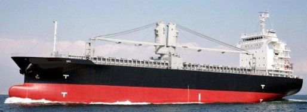

9,045 DWT 7,727 GRT General Cargo Blt 2008 Jp
/ informed by BNC SHIPBROKING CO., LTD.
(18-643)

- TYPE : TWEEN DECKER / GENERAL CARGO SHIP
- BUILT : MARCH 2008, KANASASHI HEAVY INDUSTRIES CO., JAPAN
- FLAG/CLASS : PANAMA / NK, OCEAN GOING
- LOA/LBP/B/D : 104.83 / 96.00 / 20.00 / 13.80 m
- DWT/draft : 9,045 T / 8.216 m
- GRT/NRT : 7,727 / 2,819 T
- MAIN ENGINE : HANSHIN LH46LA 4,500 PS X 220 RPM X 1set
- FO CONSUMPTION : FO 15 T/day + DO 1 T/day AT SEA, FO 1T/day + DO 2.5T IN PORT
- GRAIN/BALE : 15,738 / 14,865 m³
- HOLD/HATCH : 2 / 2
- HATCH SIZE : NO.1 26.00 X 15.00 m / NO.2 26.00 X 15.00 m
- HOLD BOTTOM MATERIAL : STEEL
- TANK TOP STRENGTH : 20 T/m²
- SPEED : SERVICE 12.5 kt
- CRANE : 30.7 T X 2set (COMBINABLE 60 T)
- CREW COMPLEMENT : 22 P
- OTHER TANK CAPACITY : FO 890, FW 268, DO 65 m³
- LAST/NEXT SS : JAN. 12, 2016 / JAN. 11, 2021
- LAST/NEXT DD : JAN. 12, 2016 / JAN. 11, 2019
- LOCATION : TRADING IN ASIA
- DELIVERY : NOV., 2018
Information History
- 180820 : She is available for sale.